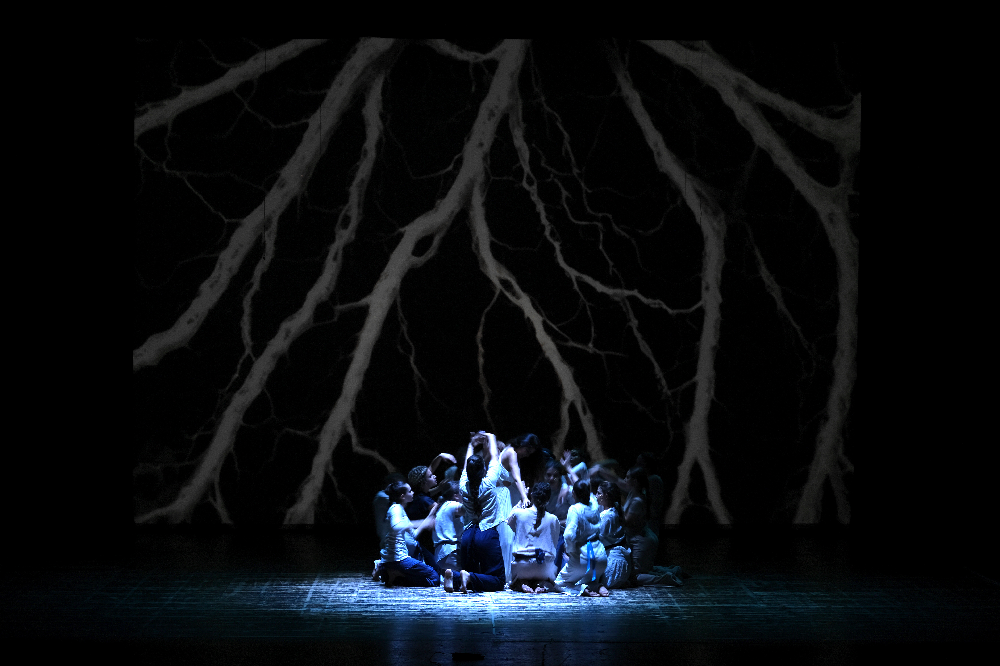
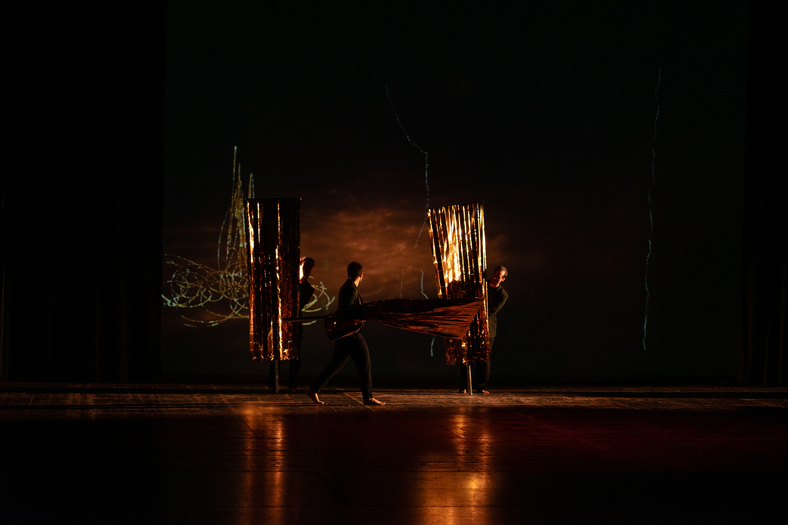
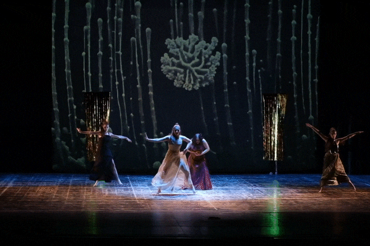
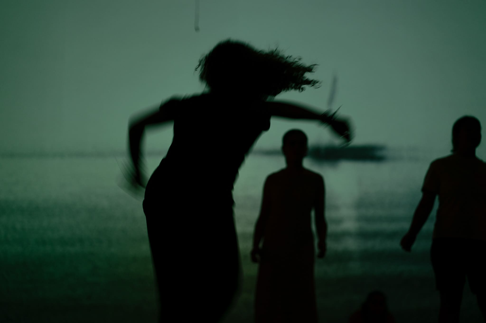
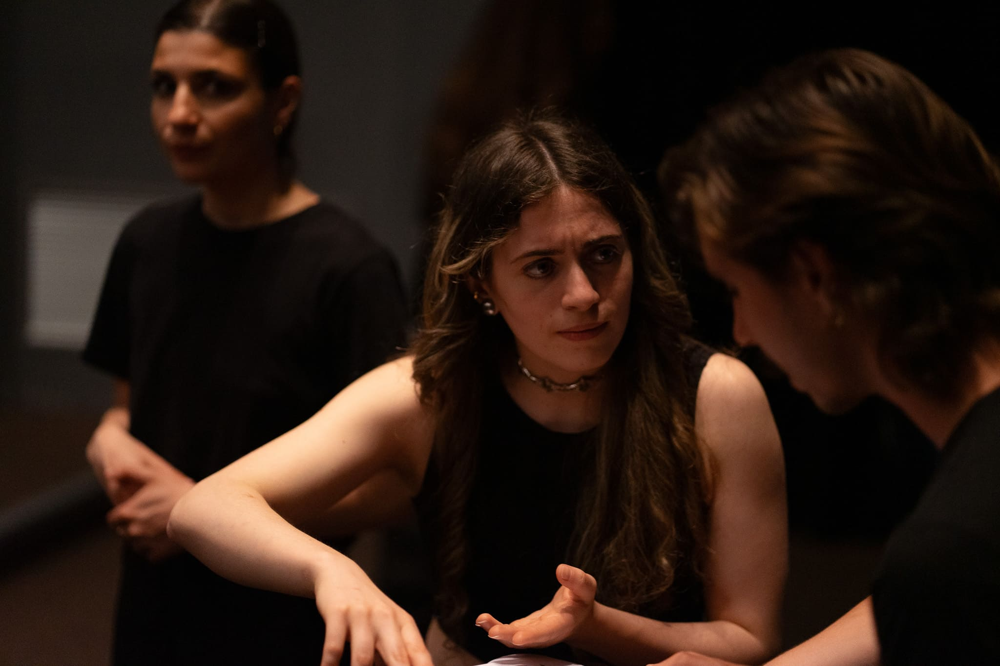
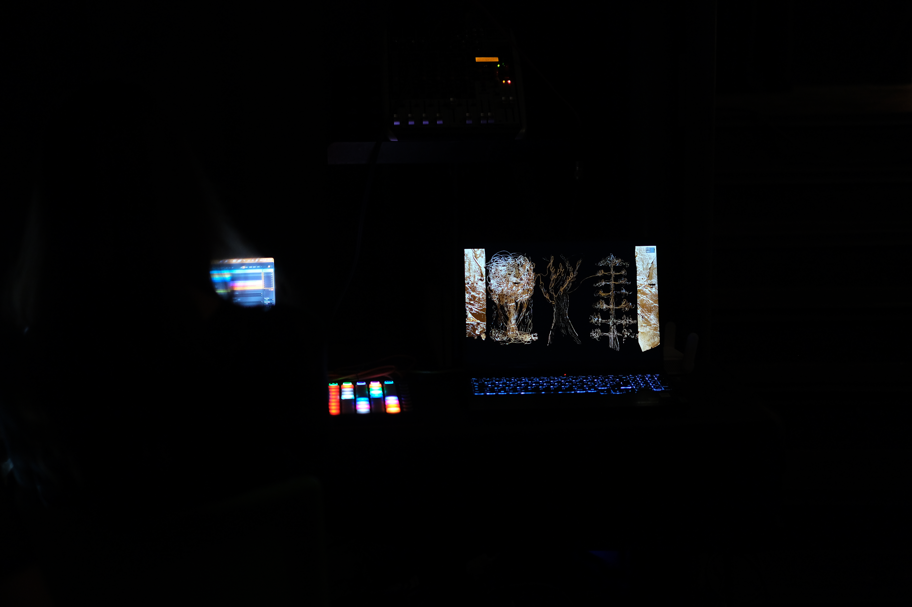
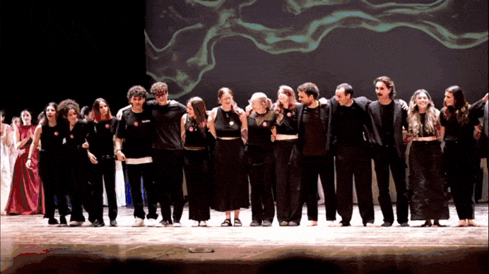

elena
> digital scenography
> co-design process
> real-time visuals
> sound design
elena is a contemporary re-reading of the Greek tragedy by Euripides, developed through a co-design process with the students of the G. Perticari High School in Senigallia, in collaboration with director Giorgio Sebastianelli and under the artistic direction of Daniele Tabellini. The project takes shape as a hybrid performative device, where digital scenography, sound, and acting are conceived as a single interdependent organism. The aim is to build a scenographic environment capable of reacting to the dramaturgical cores of the work, translating its themes into continuously evolving visual and sonic processes.
The project originates from a collective script analysis that identified five main thematic directions: death, double, divine, sea, and bond. Each theme has been translated into a specific scenographic language, later merged into a unified performative vision. Death is expressed through golden banners and organic landscapes in transformation, inspired by the logic of Kintsugi. The double emerges in the fragmentation and multiplication of Elena's image, generated in real time through artificial intelligence systems. The divine is expressed through generative structures inspired by roots, underground layers, and corals, while the sea appears as an acoustic presence, evoked through waves and wind. The bond takes form in the sonification of contact and gesture, where the banners become interactive sound instruments capable of translating relation into acoustic signal.
Rather than separate elements, these directions form a shared field of forces in which the scene behaves as a continuously evolving organism.
The entire scenographic system was developed through a continuous prototyping phase, where technical experimentation and aesthetic research progressed in parallel. The visual workflow integrates TagTool, used for live drawing via tablet, TouchDesigner, used to process graphic traces in real time, and StreamDiffusion, a generative AI node that translates manual drawing into fluid and mutable imagery while preserving the expressive quality of the gesture. The sound component uses Ableton Live and MIDI controllers (Launchkey Mini MKII and Launchpad MK2), operated in real time from the stage control room.The golden banners are embedded with copper tape electrodes connected to a conductive sensing system, allowing touch and movement to generate sound signals in real time. This approach made it possible to construct an open performative environment, adaptable to the rhythm of the scene and capable of responding to variations in live performance, where visual and sound operate as synchronized layers of a single scenographic organism.
This approach made it possible to construct an open performative environment, adaptable to the rhythm of the scene and capable of responding to variations in live performance, where visual and sound operate as synchronized layers of a single scenographic system.
The premiere of the performance, held on June 6th, 2025 at Teatro La Fenice in Senigallia, confirmed the robustness of this system: a device capable of adapting in real time to variations in acting while maintaining visual and sonic coherence within the unpredictability of live performance.
designed in 2025
artistic direction by Daniele Tabellini
directed by Giorgio Sebastianelli
a project by the second-year students (2024-2025)
of the Master's Degree in Interaction & Experience Design
University of the Republic of San Marino
in collaboration with the Classical Theatre Lab students
of the G. Perticari Classical High School
technical support by OMAI, TagTool, DataTrade






